리눅스마스터-1급 (2012-09-08 기출문제)
1과목: 리눅스 실무의 이해
1. 운영체제의 주요 역할로 틀린 것은?
- 컴퓨터의 하드웨어를 제어한다
- 시스템 자원을 스케줄링하여 효율적으로 활용 할 수 있게 한다.
- 시스템 오류의 발생을 막지만 복구를 지원하지 않는다.
- 편리한 사용자 인터페이스를 제공한다.
(정답률: 85%)

2. "여러 CPU를 병행 처리하여 사용함으로써 컴퓨터 시스템의 연산능력이 향상되어 작업 속도를 높일 수 있다. 또한, 여러 CPU중에서 하나의 CPU가 문제가 발생하더라도 다른 CPU가 계속적으로 연산할 수 있으므로 신뢰성을 높일 수 있다." 다음에서 설명하는 내용으로 알맞은 것은?
- 일괄 처리 시스템
- 다중 처리 시스템
- 실시간 시스템
- 시분할 시스템
(정답률: 76%)
3. FIFO (First-In First-Out) 기법을 이용하여 페이지 교체 기법을 사용하는 시스템에서 새로운 페이지를 적재하고자 한다. 이 기법이 속하는 것으로 알맞은 것은?
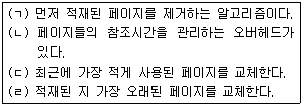
- (ㄱ), (ㄹ)
- (ㄴ), (ㄷ)
- (ㄱ), (ㄷ), (ㄹ)
- (ㄱ), (ㄴ), (ㄷ), (ㄹ)
(정답률: 72%)
4. 시스템 성능을 나타내는 요소 중 알맞은 것은?
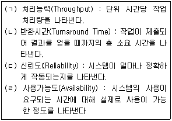
- (ㄱ), (ㄴ)
- (ㄱ), (ㄴ), (ㄷ)
- (ㄱ), (ㄷ), (ㄹ)
- (ㄱ), (ㄴ), (ㄷ), (ㄹ)
(정답률: 67%)
5. 아래 그림은 리눅스 커널의 구조를 나타낸 것이다. (가)와 (나)에 들어갈 내용으로 알맞은 것은?
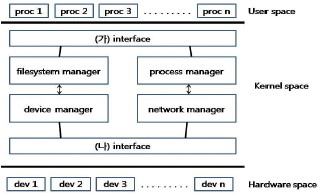
- (가) system call (나) device
- (가) device (나) system call
- (가) system call (나) network
- (가) network (나) system call
(정답률: 71%)
6. 다음은 리눅스 시스템의 구조를 나열한 것이다. 사용자(User)부터 순서대로 나열한 것으로 알맞은 것은?
- 사용자(User) - 쉘(Shell) - 커널(Kernel) - 하드웨어(H/W)
- 사용자(User) - 커널(Kernel) - 쉘(Shell) - 하드웨어(H/W)
- 사용자(User) - 하드웨어(H/W) - 쉘(Shell) - 커널(Kernel)
- 사용자(User) - 하드웨어(H/W) - 커널(Kernel) - 쉘(Shell)
(정답률: 73%)
7. 다음 중 파일시스템 구조에 대한 설명으로 틀린 것은?
- 슈퍼블록: 파일시스템의 크기 등과 같은 파일 시스템의 전체적인 정보를 갖는다.
- 아이노드 : 파일의 이름을 제외한 해당 파일의 모든 정보를 갖고 있다.
- 데이터 블록 : 파일에서 데이터를 저장하기 위해 사용되고 아이노드에 포함되어 있다.
- 간접블록 : 파일 이름과 아이노드 번호를 저장하기 위해서 사용된다.
(정답률: 56%)
8. 다음 중 X프로토콜의 서버와 클라이언트 사이에서 통신되는 기본메시지를 나열한 것으로 알맞은 것은?
- Request, Reply, Event, Error
- Request, Indication, Response, Error
- Request, Response, Event, Error
- Request, Confirm, Reply, Error
(정답률: 55%)
9. 리눅스 시스템을 바로 재부팅하여야 할 경우에 사용하는 명령으로 알맞은 것은?
- shutdown -r +10
- shutdown -r now
- shutdown -h +10
- shutdown -h now
(정답률: 81%)
10. GNOME의 실행을 위해 “startx" 명령 입력시 오류가 발생할 경우 실행하여 설정하는 것으로 알맞은 것은?
- Xconfigurator
- Xconfig
- Xfree86
- Xorg
(정답률: 65%)
11. 다음 중 배시(Bash)에 대한 설명으로 틀린 것은?
- 배시는(Bash) 1989년에 개발되었으며 실행 파일은 /bin/bash이다.
- 명령어 해석기이다.
- 사용자와 운영체제 사이를 연결시키는 하나의 유틸리티 프로그램이다.
- 부동소수점 연산이 된다.
(정답률: 64%)
12. 다음 중 쉘의 종류가 아닌 것은?
- Korn shell
- Super shell
- Csh
- Bash
(정답률: 75%)
13. 다음 설명 중 (괄호)안에 들어갈 내용으로 알맞은 것은?
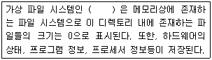
- dev
- proc
- ext3
- swap
(정답률: 66%)
14. 다음 설명 중 (괄호)안에 들어갈 내용으로 알맞은 것은?
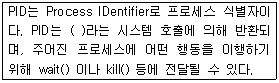
- fork
- getpid
- setpgid
- getpgrp
(정답률: 54%)
15. 리눅스 커널은 프로세스를 관리하기 위하여 커널공간 내에 프로세스들에 대한 정보를 저장한다. 이렇게 커널에 등록된 각 프로세스들의 정보를 저장하고 있는 영역으로 알맞은 것은?
- PCB(Process Control Block)
- 개체(Entity)
- 자원(Resource)
- 프로그램(Program)
(정답률: 74%)
16. 다음 중 스위칭 허브에 대한 설명 중 알맞은 것은?
- LAN이 보유한 대역폭을 PC의 대수만큼 나누어서 제공한다.
- 허브 여러 대를 묶어서 마치 하나의 허브처럼 확장시킬 수 있다.
- 트래픽 병목 현상을 제거해 각 포트당 속도가 일정하게 보장된다.
- 링 토폴로지를 구성하며, 케이블이 분산되어 있는 곳이다
(정답률: 55%)
17. OSI 7 계층(Layer)에 대한 설명 중 틀린 것은?
- 세계 표준화 기구(ISO)에서 제정한 것으로 네트워크 상호 호환을 위해 시스템간의 통신에 있어서 요구 또는 고려되는 사항들을 정리, 추상화한 모델이다.
- TCP/IP는 OSI 7 계층(Layer)에서 전송계층에 속한다.
- ARP, ICMP는 OSI 7 계층(Layer)에서 네트워크계층에 속한다.
- HTTP, SMTP, FTP는 OSI 7 계층(Layer)에서 응용계층에 속한다.
(정답률: 50%)
18. 다음이 나타내는 클래스로 알맞은 것은?
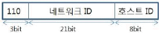
- 클래스 A : 국가나 대형 통신망에 배정된다.
- 클래스 B : 캠퍼스 전산망과 같은 중대형 통신망에 배정된다.
- 클래스 C : 소규모 통신망에 배정된다.
- 클래스 D,E : 배정이 유보되었다
(정답률: 63%)
19. 다음 중 버스 토폴로지에 대한 설명 중 틀린 것은?
- 하나의 기간선을 설치하고 기간선에서 분기하여 컴퓨터를 연결해 가는 형태이다.
- 모든 노드들은 T자 형태로 연결된다.
- 모든 메시지에는 수신지의 주소가 포함된다.
- 각 노드가 데이터의 흐름이나 네트워크를 제어 할 책임이 없다.
(정답률: 68%)
20. 네임 서버에 도메인 이름에 관한 질의를 요청하는 명령으로 알맞은 것은?
- nslookup, dig
- traceroute, ping
- nslookup, route
- route, ping
(정답률: 71%)
2과목: 리눅스 시스템 관리
21. 리눅스에서는 사용자를 UID라는 숫자값을 부여해서 관리한다. 슈퍼유저인 root의 UID로 알맞은 것은?
- 0
- 1
- 500
- 1000
(정답률: 81%)
22. 다음 중 사용자 계정 관리에 대한 설명으로 알맞은 것은?
- 사용자에게 부여된 UID는 변경할 수 없다.
- 사용자들이 사용 가능한 쉘의 목록 파일은 /etc/shell이다.
- 사용자들에게 기본적으로 할당되는 쉘은 csh이다.
- 특정 사용자의 홈 디렉토리는 /etc/passwd에서 확인한다.
(정답률: 53%)
23. 사용자 및 그룹 관리에 대한 설명 중 알맞은 것은?
- 리눅스 시스템의 일반사용자는 groupmod명령을 사용하여 본인의 그룹ID를 변경할 수 있다.
- 리눅스 시스템의 일반사용자는 chsh명령을 사용하여 본인의 로그인쉘을 변경할 수 있다.
- 리눅스 시스템의 일반사용자는 change명령을 사용하여 본인의 암호를 변경할 수 있다.
- 리눅스 시스템의 일반사용자는 usermod명령을 사용하여 본인의 로그인이름을 변경할 수 있다.
(정답률: 50%)
24. 리눅스에서는 사용자의 패스워드의 만료기간, 계정 만료일 등은 /etc/shadow에서 관리한다.
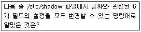
- chage
- chpasswd
- passwd
- usermod
(정답률: 59%)
25. 다음 중 사용자 계정을 일시적으로 로그인하지 못하도록 할 때 유용한 명령으로 알맞은 것은?
- su
- sudo
- userdel
- usermod
(정답률: 60%)
26. 다음과 같이 하드 디스크 장치 파일명에 아래의 명령을 실행했을 경우, (괄호)에 들어갈 내용으로 알맞은 것은?
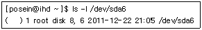
- brw-rw----
- crw--w----
- drw-rw----
- lrw-rw----
(정답률: 49%)
27. 다음 명령의 결과와 관련된 설명으로 틀린 것은?
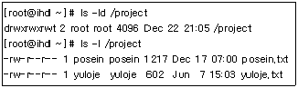
- posein 계정은 /project 디렉토리내에 추가로 파일 생성이 가능하다.
- jalin 계정이 /project 디렉토리내에 파일 생성이 가능하다.
- yuloje 계정은 yuloje.txt 파일을 삭제할 수 있다.
- posein 계정은 yuloje.txt의 내용을 볼 수 없다.
(정답률: 59%)
28. 다음은 지워진 파일을 미리 적어둔 파일명과 아이노드 번호를 이용하여 복구하는 과정이다. (괄호)에 들어갈 명령으로 알맞은 것은?
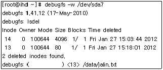
- bmap
- dump
- imap
- link
(정답률: 54%)
29. 다음은 /dev/sdb1 파티션을 ext4 파일시스템으로 생성하려고 한다. (괄호)에 들어갈 내용으로 틀린 것은?
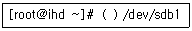
- mkfs.ext4
- mke2fs -t ext4
- mke2fs –j
- mkfs –t ext4
(정답률: 49%)
30. 다음 중 사용자 계정에 디스크 및 아이노드 사용량을 할당할 때 사용하는 명령어로 알맞은 것은?
- quota
- repquota
- quotaon
- edquota
(정답률: 47%)
31. 다음 중 부팅시 실행되는 프로세스의 실행 레벨(Run Level)과 연관된 디렉토리로 부팅관련 스크립트, 레벨별 수행되어야할 프로세스 목록 등이 존재하는 디렉토리로 알맞은 것은?
- /etc/rc.d
- /etc/xinetd.d
- /etc/pam.d
- /etc/skel
(정답률: 68%)
32. 다음 중 어떠한 명령을 백그라운드(Background)로 실행하기 위해서 사용하는 메타 문자로 알맞은 것은?
- !
- ?
- &
- $
(정답률: 77%)
33. 다음 중 top 명령어 실행으로 확인할 수 있는 항목으로 틀린 것은?
- Swap 사용량
- 디스크 사용량
- 시스템 유지 시간
- 좀비 프로세스의 수
(정답률: 53%)
34. 다음 중 cron에 관한 설명으로 틀린 것은?
- 일반 사용자가 crontab이라는 명령어를 사용해서 주기적 작업을 등록할 수 있다.
- 1년에 한번만 실행되는 것은 등록할 수 없다.
- 시스템에서 사용할 주기적 작업은 /etc/crontab에 등록한다.
- 환경 설정시 숫자값 이외에 jan, feb, sun, mon 등도 사용가능하다.
(정답률: 66%)
35. 다음은 프로세스 생성과정을 나타낸 것이다. ( 괄호 )안에 들어갈 내용으로 알맞은 것은?
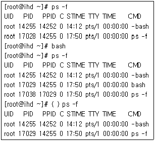
- init
- kernel
- fork
- exec
(정답률: 53%)
36. 다음 RPM에 대한 설명 중 틀린 것은?
- RPM을 사용하면 좀 더 편리하게 패키지를 설치/제거할 수 있다.
- RPM은 RedHat Package Manager의 약자이다.
- RPM은 레드햇 배포판에서만 사용되는 패키지 관리 툴이다.
- GPL(GNU General Public License)하에서 자유롭게 공개, 개발되고 있다.
(정답률: 62%)
37. 다음의 rpm 옵션 중 패키지의 기존 버전이 설치 되어서 업그레이드하고자 할 때 알맞은 것은?
- -i
- -I
- -u
- -U
(정답률: 56%)
38. dpkg 명령을 설치된 파일의 목록을 확인하려고 한다. 다음 (괄호) 안에 알맞은 것은?
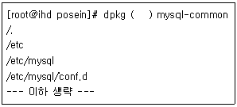
- -l
- -L
- -r
- -C
(정답률: 39%)
39. C언어를 이용하여 어떤 프로그램을 posein.c, yuloje.c 두 개의 소스로 구성하였다. 다음과 같이 오브젝트 파일을 생성한 뒤에 jalin이라는 실행 파일을 만들고자 할 때 (괄호)에 들어갈 옵션으로 알맞은 것은?
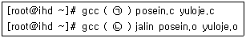
- (ㄱ) -c (ㄴ) -o
- (ㄱ) -o (ㄴ) -c
- (ㄱ) -c (ㄴ) -I
- (ㄱ) -o (ㄴ) -I
(정답률: 48%)
40. tar 명령을 이용하여 backup.tar라는 백업 파일을 생성해두었다. 추가로 jalin 디렉토리 및 yuloje.txt 파일을 묶고자 할 경우 (괄호)에 들어갈 옵션으로 알맞은 것은?
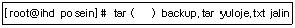
- cvf
- rvf
- tvf
- xvf
(정답률: 39%)
41. 다음 중 커널 컴파일 때 설정한 .config파일이 저장되는 위치로 알맞은 것은?
- /usr/src/linux
- /usr/sbin/linux
- /usr/local/linux
- /var/log/linux
(정답률: 53%)
42. 커널 패치 과정에 대한 설명으로 틀린 것은?
- 커널 패치 레벨은 순서대로 적용해야 한다.
- 패치가 성공했다면 *.orig 파일을 만든다.
- 패치가 실패했다면 *.rej 파일을 만든다.
- 새로운 패치 파일은 이전 패치에 대한 정보를 포함한다.
(정답률: 56%)
43. 다음 중 커널 컴파일 환경 설정을 위한 명령어 인터페이스로 틀린 것은?
- make config
- make menuconfig
- make xconfig
- make mrproper
(정답률: 63%)
44. 스캐너를 공유할 때 사용되는 saned 설정 파일로 알맞은 것은?
- /etc/services
- /etc/printcap.local
- /etc/printcap
- /etc/exports
(정답률: 39%)
45. 플러그 앤 플레이(PnP)에 대한 설명으로 틀린 것은?
- 각종 하드웨어(장치) 장소를 자동적으로 소프트웨어에 알려준다.
- 버스 자원(Bus Resource)을 드라이버와 하드웨어의 양쪽에 할당한다.
- 버스 자원을 분배시키면 /dev 디렉토리에 있는 장치의 파일을 사용할 수 있다.
- 장치와 드라이버 사이에 통신 "버스"을 만드는 것이다.
(정답률: 51%)
46. 현재 USB 버스에 연결된 장치에 대한 정보를 보여주는 파일로 알맞은 것은?
- /proc/bus/usb/drivers
- /proc/bus/pci
- /dev/usbmouse
- /proc/dma
(정답률: 60%)
47. 현재 디바이스 드라이버가 어떤 인터럽트를 사용하고 있으며 그 인터럽트가 얼마나 많이 발생하는지 알기 위한 명령으로 알맞은 것은?
- more /proc/interrupts
- more /proc/misc
- more /proc/bus/usb/drivers
- more /proc/modules
(정답률: 71%)
48. 사운드 카드 설정 명령인 sndconfig을 이용할 때 설정 파일로 알맞은 것은?
- /etc/hosts.conf
- /etc/modules.conf
- /etc/mtools.conf
- /etc/devices.conf
(정답률: 49%)
49. 리눅스에서 지원하는 대부분의 터미널 정보가 저장되어 있는 파일은?
- /etc/hosts
- /etc/fstab
- /etc/termcap
- /etc/printcap
(정답률: 70%)
50. 다음 중 프린터 명령어 설명으로 틀린 것은?
- lpq : 프린트 작업 상태를 점검
- lprm : 실행한 프린트 작업을 취소
- lpr : 쉘 프롬프트에서 프린터로 파일을 인쇄
- ldd : 프린트 공유설정을 인쇄
(정답률: 64%)
51. 다음 중 시스템 로그 관리에 대한 설명으로 알맞은 것은?
- 로그 파일은 하나의 파일에 전부 기록하는 것이 좋다.
- 리눅스의 로그 파일은 전부 텍스트 파일로 되어 있다.
- 관리자가 서비스별 로그 파일을 생성하여 관리 할 수 있다.
- 로그 파일을 압축해서 보관할 수 없다.
(정답률: 66%)
52. 다음 중 시스템 로그인에 성공한 계정 정보만 별도로 모아놓은 로그 파일명으로 알맞은 것은?
- /var/log/messages
- /var/log/secure
- /var/log/btmp
- /var/log/wtmp
(정답률: 50%)
53. 다음 웹 서버의 액세스 로그(Access Log) 상태코드 중에서 파일이 발견되지 않았을 경우(File Not Found)에 기록되는 것으로 알맞은 것은?
- 200
- 301
- 404
- 500
(정답률: 75%)
54. 다음 중 원격 터미널에서 접근하는 root 사용자를 제한하기 위해 사용하는 파일로 알맞은 것은?
- /etc/securetty
- /etc/issue.net
- /etc/nologin
- /etc/services
(정답률: 48%)
55. 다음 중 /etc/services 파일의 수정, 삭제, 이름 변경 등을 막으려고 할 때 (괄호)에 명령으로 알맞은 것은?
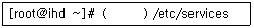
- chattr –i
- chattr +i
- lsattr –i
- lsattr +i
(정답률: 47%)
56. 다음 중 SSH의 공개키 및 개인키를 생성할 경우 (괄호)의 명령으로 알맞은 것은?
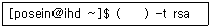
- ssh
- ssh-key
- ssh-genkey
- ssh-keygen
(정답률: 62%)
57. 다음 중 PAM(Pluggable Authentication Modules)에 대한 설명으로 틀린 것은?
- PAM에서 제어하는 서비스들은 /etc/pam.d 디렉토리안에 설정한다.
- 특정 서비스에 대한 사용자들의 허가 목록 파일을 만들 때 사용할 수 있다.
- 특정 서비스에 대한 사용자들의 거부 목록 파일을 만들 때 사용할 수 있다.
- pam이라는 명령어를 이용하여 사용자를 제어한다.
(정답률: 55%)
58. 다음 중 백업 정책에 관한 설명으로 틀린 것은?
- 하나의 파티션당 두 개 이상의 백업 테이프를 사용한다.
- 자료 가치에 따라 다른 백업 전략을 취한다.
- 백업 데이터는 같은 시스템내에 보관한다.
- 중요한 벡업 자료는 암호화를 해둔다.
(정답률: 74%)
59. 다음 cpio 명령을 이용하여 백업을 할 경우 (괄호)에 알맞은 것은?
- -icdv
- -ocv
- -rf
- -bf
(정답률: 51%)
60. 다음 중 /etc/fstab 관련하여 dump 명령에 의해 참조되는 필드의 영역으로 알맞은 것은?
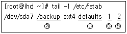
- ㉮
- ㉯
- ㉰
- ㉱
(정답률: 45%)
3과목: 네트워크 및 서비스의 활용
61. 다음 중 apache 웹서버의 httpd.conf 파일의 섹션 설명으로 틀린 것은?
- Global Environment : 아파치 서버 프로세스에 관련된 전반적인 제어를 담당
- Share Definitions : 공유 섹션에 대한 설정을 담당한다.
- Virtual Host : 가상 호스트에 대한 제어를 담당한다.
- Main Server configuration : 주 서버에 대한 제어를 담당한다.
(정답률: 39%)
62. 현재 사용되어지는 웹서버 중 가장 많은 비중을 차지하는 웹서버로 알맞은 것은?
- Apache
- IIS
- nginx
- GWS
(정답률: 72%)
63. 다음 아파치 웹서버 관련 설명에 해당하는 것으로 알맞은 것은?
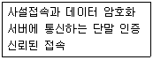
- SSL
- CGI
- Zend
- JServ
(정답률: 72%)
64. 다음 httpd.conf 환경설정에서 주요 설정에 대한 설명으로 틀린 것은?
- Port : 아파치 서버가 요청을 기다리는 포트
- StartServers : 최대로 제한되어야 할 서버의 수
- LoadModule : 동적 공유 객체(Dynamic Support Object) 방식으로 아파치에서 모듈 형태로 추가하거나 제거하여 사용하는 방식
- DocumentRoot : URL 상의 서버 root 문서가 위치하는 디렉토리
(정답률: 60%)
65. 다음 중 리눅스 환경에서 사용되어지는 데이터베이스로 틀린 것은?
- MySQL
- Oracle
- PostgreSQL
- MSSQL
(정답률: 64%)
66. 다음 중 아파치 웹서버와 MySQL 연동 설치 시 사용되는 컴파일 옵션으로 틀린 것은?
- prefix=/usr/local/mysql : MySQL이 설치될 디렉토리는 /usr/local/mysql 이다.
- with-charset=euc_kr : MySQL에서 한글을 사용하겠다.
- localstatedir=/usr/local/mysql/data : MySQL의 로그 데이터를 /usr/local/mysql/data로 지정 하겠다.
- with-tcp-port=3306 : 3306 포트를 사용하여 서비스 하겠다.
(정답률: 63%)
67. apache 웹서버와 PHP 연동 설치시 사용되는 컴파일 옵션 중 설명이 틀린 것은?
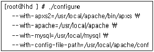
- php가 설치되는 디렉토리는 /usr/local/apache/bin/apxs 이다.
- php와 연동될 아파치 웹서버의 설치디렉토리는 /usr/local/apache 이다.
- php와 연동될 mysql 설치 디렉토리는 /usr/local/mysql 이다.
- 아파치 웹서버의 설정파일의 위치는 /usr/local/apache/conf 이다.
(정답률: 57%)
68. 아파치 주요 디렉토리(/usr/local/apache)에 대한 설명으로 틀린 것은?
- bin : 아파치 사용시 필요한 유틸리티들이 들어있다.
- conf : 아파치 서버의 여러 가지 설정 파일들이 들어있다.
- icons : 아파치 서버에 사용되는 cgi 스크립트 등이 들어있다.
- logs : 아파치 서버 사용시 발생하는 여러 가지 로그들이 들어있다.
(정답률: 59%)
69. 다음 apache 웹서의 가상 도메인에 대한 설명으로 틀린 것은?
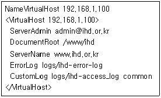
- 서버관리자의 메일주소는 admin@ihd.or.kr 이다.
- 서버의 도메인 주소는 www.ihd.or.kr 이다.
- 192.168.1.100 IP를 이용하여 도메인을 서비스 한다.
- 모든 로그는 ihd-access_log 파일에 기록된다.
(정답률: 61%)
70. 다음 중 httpd 옵션에 대한 설명으로 틀린 것은?
- httpd -t : httpd.conf 의 파일설정을 점검한다.
- httpd -f : httpd 데몬을 강제로 중지 한다.
- httpd -S : 현재 설정되어 있는 가상호스트의 리스트를 보여준다.
- httpd -l : 현재 컴파일된 모듈에 대한 리스트를 보여준다.
(정답률: 44%)
71. 마이크로소프트와 인텔이 윈도우시스템에서 유닉스 서버의 파일이나 프린터와 같은 자원을 공유할 수 있도록 개발한 프로토콜로 알맞은 것은?
- FTP
- SMB
- www
- TCP/IP
(정답률: 69%)
72. 다음 중 삼바 서버 테스트 명령으로 틀린 것은?
- testparm
- smbstatus
- smbclient
- smbserver
(정답률: 30%)
73. 다음 중 삼바 서버 설정(smb.conf)에 대한 설명으로 틀린 것은?
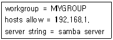
- 윈도우상의 workgroup 는 MYGROUP 이다.
- 오직 192.168.1. 대역에서만 허락이 가능하다.
- 192.168.1. 에서도 허용가능하며, 다른 대역에서도 연결허락이 가능하다.
- 서버에 대한 설명은 samba server 이다
(정답률: 66%)
74. 다음 내용이 설명하는 서비스 데몬으로 알맞은 것은?
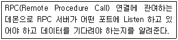
- rpc.nfsd
- rpc.mountd
- portmap
- rpc.lockd
(정답률: 56%)
75. 다음 /etc/exports 파일의 내용으로 설명이 틀린 것은?
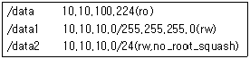
- 10.10.100.224 에서 /data 디렉토리에 대해 읽기전용으로 접근 가능하다.
- 10.10.10.100 에서 /data1 디렉토리에 대해 읽기쓰기로 접근이 가능하다.
- 10.10.100.224 에서 /data2 디렉토리에 대해 읽기쓰기로 접근이 가능하다.
- 10.10.10.100 에서 /data2 디렉토리에 대해 root 권한으로 읽기쓰기가 가능하다.
(정답률: 47%)
76. NFS(Network File System)에 대한 설명으로 틀린 것은?
- 파일 전송 후 파일을 조작할 필요가 없다.
- 서버와 클라이언트에 TCP/IP 프로토콜을 설치해야 한다.
- 클라이언트/서버형 응용 프로그램이다.
- 개발사인 마이크로소프트사의 등록 상표이다.
(정답률: 60%)
77. 다음 중 ftp 서비스에 대한 설명으로 알맞은 것은?
- ftp는 20번, 21번 두 개의 포트를 사용한다
- root 사용자는 ftp 서비스를 사용할 수 없다.
- ftp 클라이언트 명령으로 디렉토리도 전송이 가능하다.
- ftp 접속 모드에는 Active 모드와 Standby 모드가 있다.
(정답률: 58%)
78. 다음 pro-ftp 의 anonymous 사용자 환경설정 내용 중 설명으로 틀린 것은?
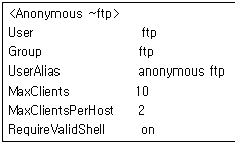
- ftp 사용자, 그룹은 ftp 이다.
- 클라이언트들이 최대로 접속할수 있는 수로 10명까지 접속이 가능하다.
- 한 호스트당 접속할 수 있는 개수는 2명이다.
- anonymous 사용자로 접속하고자 하려면 RequireValidShell on 으로 해주어야 한다.
(정답률: 63%)
79. 다음은 Limit 에 대한 예제이다. 설명으로 틀린 것은?
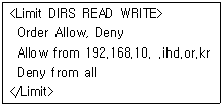
- 파일 읽기와 관련된 FTP 명령, 파일 또는 디렉토리 쓰기,생성,삭제와 관련된 FTP 명령을 허용한다.
- 192.168.10.0 대역에서 접속한 클라이언트에서 디렉토리 명령을 허용한다.
- ihd.or.kr에 속한 호스트 클라이언트에서 디렉토리 명령을 허용한다.
- 디렉토리 목록과 관련된 FTP 명령 사용을 거부한다.
(정답률: 47%)
80. 다음 ProFTPD 서비스의 설명으로 틀린 것은?
- FTP는 File Transfer Protocol 서버의 약자로 파일을 업로드 또는 다운로드 할 수 있다.
- FTP 서비스의 최대 자식 프로세스 수를 지정 할 수 있다.
- proftp는 proftpd.conf 파일에서 환경설정이 이루어진다.
- ftp서버를 독립적인 데몬형태(Standalone)으로 작동 시킬 수 있으며, xinetd 방식으로 작동 시킬 수는 없다.
(정답률: 68%)
81. 다음 중 메일 유저 에이전트(MUA) 프로그램으로 틀린 것은?
- Eudora
- Outlook
- Firefox
- Pine
(정답률: 65%)
82. 다음 메일관련 프로토콜의 설명으로 알맞은 것은?
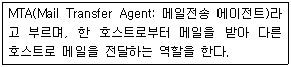
- sendmail
- Kmail
- POP3/IMAP
- SPOOL
(정답률: 54%)
83. 다음 메일 서비스의 특정 설정 파일에 대한 설명에 해당하는 것으로 알맞은 것은?
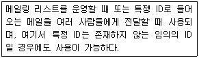
- access
- aliases
- .forward
- local-host-names
(정답률: 53%)
84. 다음에서 설명하는 메일 서비스로 알맞은 것은?
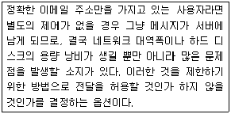
- RELAY
- REJECT
- OK
- DISCARD
(정답률: 52%)
85. 다음 xinetd 서비스에 대한 설명으로 틀린 것은?
- TCP,UDP 및 RPC 서비스들에 대한 접근을 제어한다.
- 타임세그먼트에 기초한 접근을 제어한다.
- 접속 성공 또는 실패에 대한 완전한 로깅기능을 제공한다.
- DoS 공격에 대한 대비가 미흡하다.
(정답률: 57%)
86. 슈퍼데몬 설정파일의 속성을 지정할 때, 동시에 작동할 수 있는 동일 유형 서버의 최대 수를 정의하는 것은 무엇인가?
- instances
- cps
- per_source
- max_load
(정답률: 52%)
87. 슈퍼데몬 설정파일의 속성을 지정할 때, socket_type에 들어갈 인수값으로 알맞은 것은?
- dgram
- stream
- seqpacket
- raw
(정답률: 57%)
88. 다음에서 설명하는 인터넷서비스로 알맞은 것은?
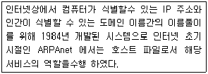
- TCP/IP 프로토콜
- DNS
- WWW
- IP address
(정답률: 67%)
89. 다음에서 설명하는 DNS 서버의 종류로 알맞은 것은?
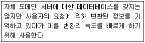
- 주네임 서버
- 보조 네임 서버
- 캐싱 서버
- 서드 네임 서버
(정답률: 70%)
90. DNS(bind)의 Zone 설정 중 리소스 레코드에 대한 설명으로 틀린 것은?
- IN : 인터넷 클래스를 의미한다.
- NS : 도메인 네임서버를 지정한다.
- IN PTR : 호스트 이름에 대한 IP 주소를 지정한다.
- A : 도메인에 대한 IP를 지정한다.
(정답률: 55%)
91. 프록시(Proxy)서버 프로그램인 squid를 소스 설치 하고 설정한 후 데몬을 구동시키는 방법으로 알맞은 것은?
- /usr/local/squid/bin/squid -z
- /usr/local/squid/bin/squid &
- /usr/local/squid/bin/squid squid
- /usr/local/squid/bin/squid start
(정답률: 40%)
92. 다음은 프록시(Proxy)서버를 구성하기위한 환경 설정 내용 설명 중 틀린 것은?
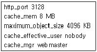
- 스퀴드 프록시서버의 서비스포트는 3128 이다.
- 스퀴드서버에서 사용하는 캐시 사이즈는 8MB 이다.
- 캐시 서버에 저장될 수 있는 객체 즉 파일의 크기를 4096KB으로 제한한다.
- 스퀴드 서버를 작동시킬 유저와 그룹명은 webmaster 이다.
(정답률: 63%)
93. 다음에서 설명하는 서비스로 알맞은 것은?
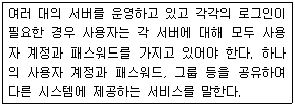
- NIS
- NTP
- SSH
- NFS
(정답률: 53%)
94. 다음 NIS 관련 명령어로 설명이 틀린 것은?
- nisdomainname : NIS 도메인 이름을 보여 주거나 지정하는 명령
- ypwhich : NIS 서버의 이름과 관련 맵 파일을 보여준다.
- ypcat : NIS 서버의 맵 파일 정보를 보여준다.
- yppasswd : NIS 클라이언트에 등록된 사용자 패스워드 변경
(정답률: 33%)
95. 다음 NIS 를 통해 인증이 가능한 서비스로 틀린 것은?
- telnet
- samba
- http
- ssh
(정답률: 40%)
96. 다음 중 DHCP 서버에 대한 설명으로 틀린 것은?
- 서버가 클라이언트에게 자동으로 IP주소를 할당해주는 서버를 말한다.
- ipv4 체계의 IP 주소 고갈문제를 해결할 수 있다.
- 하드디스크가 없는 원격호스트에서 이더넷 카드로 부팅이 가능하다.
- DHCP 서버는 특정 호스트에 고정 IP를 부여 할 수 없다.
(정답률: 54%)
97. 다음 DHCP 서버의 환경설정 파일에 대한 설명으로 잘못된 것은?
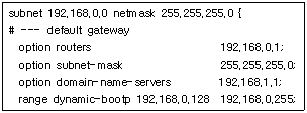
- DHCP 클라이언트 전체 서비스 대역은 192.168.0.0/24 이다.
- DHCP 클라이언트 게이트웨이 주소는 192.168.0.1 이다.
- 할당 되어지는 IP 주소는 192.168.0.0∼255까지 이다.
- 네임서버주소는 192.168.1.1 이다.
(정답률: 67%)
98. 다음 중 대상 서버를 찾아서 포트를 scan 하는 리눅스 명령으로 알맞은 것은?
- nmap
- rsync
- netstat
- tripwire
(정답률: 50%)
99. 대표적인 백도어인 루트킷에 대한 설명 중 틀린 것은?
- Es : sun4 기반 이더넷 스니퍼이다.
- z2 : utmp, wtmp, lostlog로 부터 특정 엔트리를 제거한다.
- SI : 매직 패스워드를 통해 관리자로 로그인 하는 도구이다.
- Fix : 인터럽트 루틴을 삽입하여 은닉하는 도구이다.
(정답률: 43%)
100. 방화벽에 대한 설명 중 틀린 것은?
- 방화벽 시스템을 구축하는 2가지 유형은 네트워크 레벨과 응용 레벨이다.
- 방화벽 구축시 고려사항은 시간지연, 손실제어, 시스템 실패환경 등을 들 수 있다.
- 안전하지 않은 서비스를 필터링하여 위험을 감소시킬 수 있다.
- iptables는 INPUT, OUTPUT, FORWARD 체인이 있다.
(정답률: 52%)